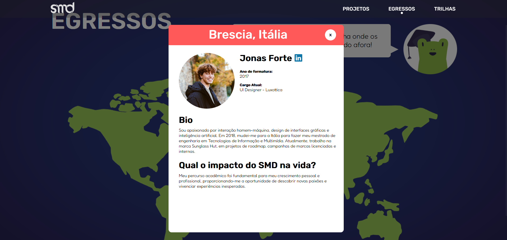

A platform for Multimedia Engineering students to share their projects with one another
This project was created as a repository for Digital Media and System bachelor students to share their work with others. The website's design and functionality were developed based on the client's needs, defined through various user research methods such as usability tests and surveys which were conducted to guide the development process.
I was responsible for a significant portion of the front-end development, including implementing animations designed by other team members using CSS and JavaScript. I also contributed to the platform’s visual design, focusing on text formatting and layout. In addition, I took part in team management and project coordination.
Visit the website at: https://edmararocha.github.io/PortfolioSMD